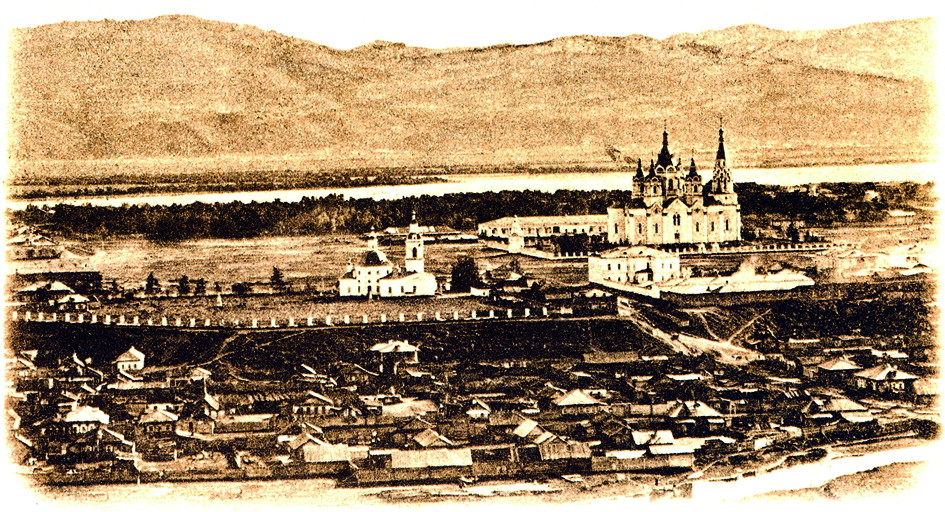

Что такое история и культура
История — это наука о прошлом человечества, о событиях, процессах и людях, которые определяли ход развития обществ и государств. Она изучает, как возникали и распадались цивилизации, какие войны и договоры меняли границы, как развивались науки, ремёсла и представления человека о мире.
Культура — это совокупность материальных и духовных ценностей, созданных человеком: язык, обычаи, религия, искусство, архитектура, литература, музыка, нормы поведения и быт. Культура передаётся из поколения в поколение и во многом определяет то, как люди думают, чувствуют и взаимодействуют друг с другом.
Почему это важно
История и культура неразрывно связаны. Исторические события формируют культурные традиции, а культурные ценности, в свою очередь, влияют на ход истории. Понимание этой связи помогает лучше осознать, кто мы есть, откуда пришли и куда движемся.
Изучение прошлого даёт нам возможность учиться на ошибках предков, сохранять наследие и находить ориентиры в настоящем. Именно поэтому так важно бережно относиться к памятникам, архивам, языкам и традициям — всему тому, что составляет основу нашей общей идентичности.
Основные периоды истории
Традиционно историю делят на несколько крупных эпох: первобытное общество, Древний мир, Средние века, Новое время и Новейшее время. Каждый период отличается своими формами хозяйства, политическими системами, религиозными взглядами и культурными достижениями.
Вместе с тем деление это условно: переход от одной эпохи к другой происходил постепенно, и в разных регионах мира эти процессы шли неравномерно. Именно поэтому история остаётся живой наукой, в которой исследователи продолжают находить новые факты и пересматривать привычные трактовки.